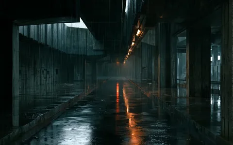
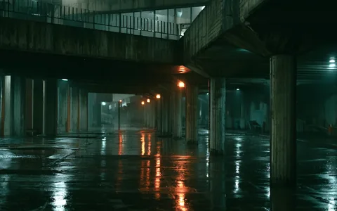
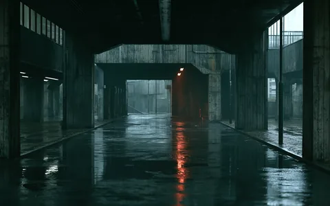
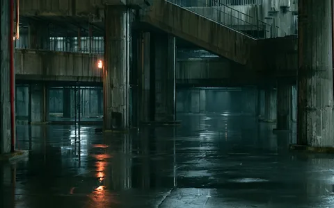

Build a campaign world that feels quiet, industrial, nocturnal, and repeatable across coverage.
Study register / self-initiated R&D
Three briefs.
Three written systems.
These studies are not presented as client work. They exist to make the directing method inspectable: brief → grammar → locked frame → continuity decisions → production outputs.
← Return to FWD Motion
STUDY / 01
Night Transit
A premium nocturnal launch world built around liminal infrastructure, restrained practical light, and environmental continuity.


35mm base language, low eye line, deliberate vanishing points, controlled horizon.
Soft sodium practicals against desaturated blue-grey ambient exposure.
Weathered concrete, wet ground, repeating bays, sparse service detail, no visual clutter.

Camera drift
Palette drift
Light drift
World driftWhat this proves: the failure modes can be named before production, then checked against a canonical frame instead of rediscovered shot by shot.
STUDY / 02
Precision Object
An engineered-audio product study designed to separate product identity from borrowed brand language.

Make an anonymous engineered object feel tactile, expensive, and unmistakably intentional.
50mm normal perspective, locked horizon, restrained distance changes.
Blackened metal and stone retain micro-texture without exaggerated specular effects.
No logos, recognizable industrial design, neon, sci-fi UI, or borrowed brand motifs.
What this proves: a product-treatment grammar can carry perceived value without leaning on an existing brand’s visual identity.
STUDY / 03
Mineral Glass
A beauty/material study where optical behavior—not decorative set dressing—does most of the directing work.

Build luxury from material response and restraint rather than conventional beauty-ad ornament.
85mm intimate perspective with controlled shallow depth and low camera height.
Single raking warm source, graphite shadow field, restrained burgundy transmission.
Glass refraction, condensation, stone texture, and hard-surface reflections remain physically plausible.
What this proves: lighting and material rules can be written tightly enough that “luxury” stops being a vague prompt adjective.
Entry product / 5–7 working days